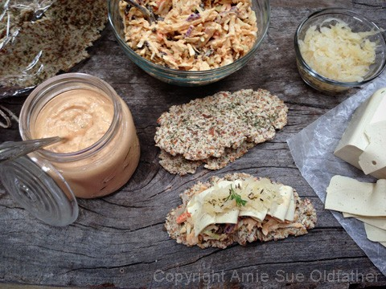

Thousand Island Cole Slaw

~ raw, vegan, gluten-free ~
The origin of the term “Cole Slaw” comes from the Dutch word, koolsla, which was a shortened version of the term koolsalade, which literally meant “Cabbage Salad.” I have seen it spelled out as one word (coleslaw) or two words (cole slaw) and to be honest I can’t figure out which one is truly correct so I am claiming the two-word spelling of it.
I grew up eating coleslaw, but it was usually just grandma’s recipe. It seems like in the circle of families there are a few staple dishes that certain members always make. Grandma was known for her slaw, and a bowl of it adorned the buffet table for every family get together. No one else dared to make it. :) Until now…. And I only dare to make it because we now live thousands of miles apart… shew.
I actually created this recipe so I could make a raw version of a Reuben “sandwich” for Bob, And every Reuben needs a slaw. I had made a batch of my Chunky Vegan Thousand Island Dressing and decided to use it as the creamy base to my slaw. It turned out wonderful.
In fact so wonderful that Bob ate the whole bowl of slaw as a late night snack… snack? That was no little snack, that was a big bowl. Haha Regardless, an empty bowl is always a sign of something good.
Enjoy!
Ingredients:
yields 3 3/4 cups
Preparation:
- In a food processor or with a hand-held grater, shred the cabbage and carrots. I like to mix green and purple cabbage into it for color. Place in a medium-sized bowl.
- Add the dressing and raisins and toss together until everything is coated in the dressing.
- Keep store in the fridge. Should last for 3-4 days.

© AmieSue.com